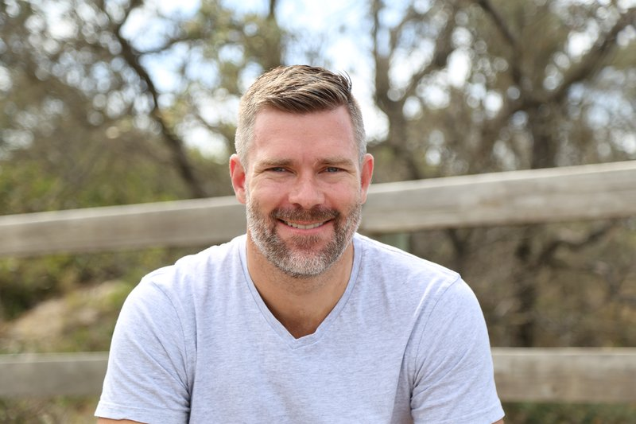

Independent SAP Consultant · Sydney, Australia
Not just the data layer — the process behind it, the finance that depends on it, and the executive decisions it needs to support. From J&J to BAT's 183-country rollout to Shiseido's global platform — I've learned that the technology is rarely the hard part.

About
I started in finance — not technology. I joined Johnson & Johnson Medical out of university as an accountant, completed my CA there, and worked across several roles before becoming finance lead on their ASPAC SAP programme. That programme was a success, and it's where I discovered that the most interesting problems in any organisation sit at the intersection of data, finance and systems.
From there I joined British American Tobacco during what became one of the largest SAP implementations in history — 183 countries rolled onto a single platform in just over two years. Over six and a half years at BAT I moved from SAP implementation to regional stabilisation, then to Global Finance BI Lead, product costing standardisation across 45 factories, and finally Global PM for Commercial Finance Operations, building a centre of excellence in Kuala Lumpur serving 47 factories and 183 countries.
Halfway through BAT I founded Liquid Peak, my own SAP consultancy — shifting from employee to contractor through my own company. That independence has defined how I've worked ever since.
I then joined Stockland as finance lead for their S4 programme — brought in for the final year to get it across the line and into go-live. After that, a year back with BAT in the US to integrate their BI team onto the global platform. Then Shiseido as Global BI Lead during their global S4 implementation, managing data and reporting requirements across 120+ countries.
Today I lead the Data & Intelligence practice at Emphasys, an SAP Gold Partner — focused on helping organisations turn SAP data into trusted, decision-ready intelligence through Datasphere, SAC, and the Business Data Cloud. I also build products on the side — SaaS platforms and AI tools that apply the same thinking about data and process to entirely different industries.
Expertise
These aren't checkbox certifications. They're areas where I've done the real work — designed the architecture, built the model, explained it to the CFO, and delivered something that actually got used.
Writing
I write about SAP data and AI in plain English. The goal is always the same — give someone something they can actually use.
Tools & Resources
A growing library for SAP teams — practical worksheets you can use today, structured guides for preparing data products, and a new wave of AI-backed tools launching soon. All free to try.
Work
I don't publish detailed case studies without client permission. But I can share the shape of the work and the outcomes it delivers.
Contract role, Dec 2021 – present
Selected client references available on request
Active engagement — client details withheld
Enquiries welcome for 2026 engagements
Get in touch
If you're thinking about Datasphere, SAC, MDG, sustainability reporting, or just trying to make sense of where SAP data fits in your AI strategy — I'm happy to talk it through. No pitch deck, no sales process.
I typically start with a 30-minute conversation to understand what you're dealing with. If there's something I can help with, I'll tell you. If there isn't, I'll tell you that too.